Tugas Akhir
Perancangan dan Implementasi Sistem Akses Buku Digital untuk Perangkat Bergerak
Oleh Panjie Setiawan Wicaksono / 13207064
Tugas Akhir II
- Pembimbing: Dr.-Ing. Eueung Mulyana ST. MSc
- Judul: Perancangan dan Implementasi Sistem Akses Buku Digital untuk Perangkat Bergerak
- Kata Kunci: buku digital, client, server, integrasi
Pendahuluan
Latar Belakang
Perkembangan Teknologi Informasi
Konten Digital (Buku, dsb)
Tersebar + Belum Ada Integrasi Penuh
Sistem Akses Buku Digital
Tujuan
-
Merancang sistem akses buku digital.
Akses perpustakaan digital
+
Membaca buku digital+
Backup data di cloud -
Mengimplementasikannya.
ITBookReader
Perangkat bergerak Android
Target pengguna: semua kalangan
Lingkup dan Batasan
- Implementasi: Sistem Operasi Android
- Pembaca buku digital: PDF & EPub
- Infrastruktur server: Penyedia jasa
- Java & Python
Metodologi
Penentuan Topik
Riset Permasalahan
Perancangan Sistem
Kajian Pustaka Literatur + Program
Implementasi
Dasar Teori
Buku Digital
Definisi
Bentuk publikasi konten buku
Kata-kata + gambar + konten lain
Media atau perangkat elektronik
Keunggulan
Ramah lingkungan
Fleksibilitas akses
Variasi konten
Efisien
Buku Digital - Definisi PDF
Portable Document Format
Adobe Systems
PostScript + Sistem Embed + Sistem Enkapsulasi
%!PS
/Courier % name the desired font
20 selectfont % choose the size in points and establish
% the font as the current one
72 500 moveto % position the current point at
% coordinates 72, 500 (the origin is at the
% lower-left corner of the page)
(Hello world!) show % stroke the text in parentheses
showpage % print all on the page
Buku Digital - Struktur PDF

Header: Informasi versi PDF
Body: Informasi obyek
Xref table: Penunjuk + identifikasi obyek
Trailer: Akhir dokumen
Buku Digital - Definisi Epub
Electronic Publication
IDPF - International Digital Publishing Forum
File kompresi ZIP
Konten dalam file markup (X)HTML
Buku Digital - Struktur Epub (1)
OCF - Open Container Format
Enkapsulasi dokumen-dokumen penyusun epub
ZIP - Sistem file virtual
Folder META-INF {file 'container.xml'}
OPS - Open Publication Structure
Dokumen isi buku
.html atau .xhtml {text, gambar, css}
OPF - Open Packaging Format
File .opf
Lokasi dicantumkan pada 'container.xml'
Metadata, daftar isi, identifikasi buku
Buku Digital - Struktur Epub (2)

Java
Object Oriented Programming
WORA - Write Once Run Anywhere
Java Virtual Machine
.java kompilasi .class (bytecode) eksekusi
low level: Java C/C++
class & object
JRE - Java Runtime Environment (7u21)
JDK - Java Development Kit (7u21)
Java (2)
HelloWorld.java:
class
{
public static void main(string[] args)
{
System.out.println("Hello World!");
}
}
Kompilasi + Eksekusi:

HelloWorld.class:

Java + Maven
Memudahkan proses build
Sistem build yg seragam
Informasi kualitas proyek
Kerangka dan standar
Logika update pustaka
Java + Maven (2)
pom.xml:
4.0.0
com.mycompany.app
my-app
1.0
junit
junit
3.8.1
test
Java + Maven (3)
Struktur proyek Maven:

Python
Multi-paradigm
Filosofi: mudah dibaca programmer
Interpreter
Python Interpreter (2.7.3)
Pustaka Standar Python
Pustaka Dependensi Lain
Python (2)
hello.py:
print "Hello World!"
eksekusi:

Google App Engine
PaaS - Platform as a Service
Private + sandboxed instance
Struktur + jaringan milik Google
Scalable
GAE SDK: Java, Python, Go, PHP
Google App Engine - Servis
Users API
Authentication and Authorization
Google Account
Security
Blobstore and Image API
BLOB - Binary Large Object
File dalam database
Distributed + High Availability
Prospective Search
Full text search engine
Google App Engine - Servis (2)
| Memcache | Sockets |
| Cloud Endpoint | Channel |
| OAuth | |
| URL Fetch | XMPP |
Google App Engine - Database
Google Cloud SQL
Terpisah
Relational Database
Google Cloud Storage
Terpisah
File / obyek saja
App Engine Datastore
Default
NoSQL / Schemaless Key-Value
HRD - High Replication Database
Google Cloud Endpoint
API Backend (Mobile) Client Library
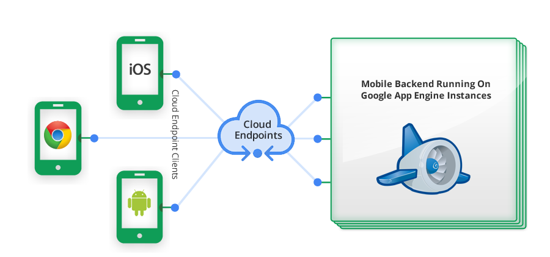
Google Cloud Endpoint (2)
Kode program API
API Server
Client Library
Android
Berbasis Linux
smartphone / tablet - Layar Sentuh
OS C/C++ ; Aplikasi Java
Dalvik Virtual Machine
.java .class (bytecode) .dex .apk
Android SDK + ADT / Maven
Android - Arsitektur
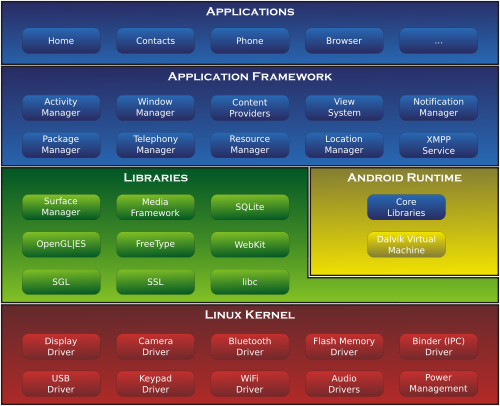
Android - Komponen
Activity
Komponen utama aplikasi
Interaksi pengguna dan aplikasi
Fragment
Opsional
Bagian Activity
Dinamis
View
Antar muka
Skenario dan Perancangan Sistem
Skenario Sistem
| Server Akses Konten | Client Mobile Device |
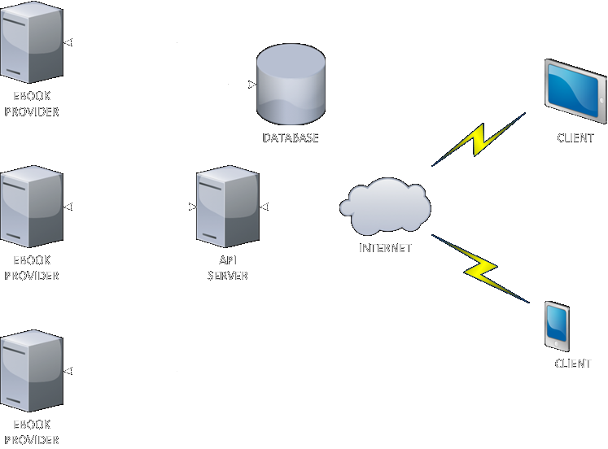
Spesifikasi - Ebook Provider
OPDS - Open Publication Distribution System
XML / Atom Document
Navigasi, Akuisisi, Informasi
http://www.feedbooks.com/catalog.atom
Feedbooks
2013-05-31T17:30:29Z
http://assets1.feedbooks.net/images/favicon.ico?t=1369910075
Feedbooks
http://www.feedbooks.com
support@feedbooks.zendesk.com
Best Sellers
2013-05-31T17:30:29Z
http://www.feedbooks.com/books/top.atom?range=week
All categories
New Releases
2013-05-31T17:30:29Z
http://www.feedbooks.com/books/recent.atom
Freshly arrived on Feedbooks
Fiction
http://www.feedbooks.com/store/categories/FBFIC000000.atom
2013-05-31T17:30:29Z
Literary, Science Fiction, Romance, Thrillers, Fantasy
Non-Fiction
http://www.feedbooks.com/store/categories/FBNFC000000.atom
2013-05-31T17:30:29Z
Biography & autobiography, Travel, History, Health & fitness, Philosophy
Free Books
2013-05-31T17:30:29Z
http://www.feedbooks.com/site/free_books.atom
Thousands of free classics and originals
Recommended Readings
2013-05-31T17:30:29Z
http://www.feedbooks.com/recommended.atom
Browse through our lists of recommended books
Spesifikasi - Ebook Provider (2)
Feedbooks
http://www.feedbooks.com/catalog.atom
Epub Bud
http://www.epubbud.com/feeds/catalog.atom
Internet Archive
http://bookserver.archive.org/catalog/
Pragpub Magazine
http://pragprog.com/magazines.opds
ManyBooks
Spesifikasi - API Server
Perantara Client dan Konten Buku Digital
Requirement:
- Pengolah OPDS (Dokumen Atom / XML)
- Server to server request
- Client Request - GET, POST, PUT, DELETE
- Client Response - JSON Format
- Menyimpan data
Spesifikasi - API Server (2)
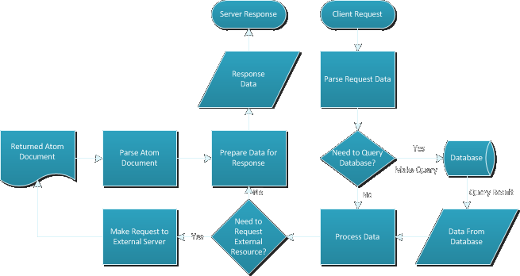
Spesifikasi - Infrastruktur API Server
Jasa Penyedia Infrastruktur Server
Akses Jaringan
Keamanan Data
Spesifikasi - GAE untuk API Server
Infrastruktur Google
Integrasi produk Google - Basis pengguna besar
HRD - High Replication Database
Ekonomis + Scalable
API Client Library - Cloud Endpoints
GAE SDK: Python, Java, Go, PHP
Spesifikasi - Database
Informasi Perpustakaan Digital
Nama unik, misal: "feedbooks"
Nama resmi, misal: "Feedbooks Ebook Provider"
Alamat dokumen OPDS
Informasi Pengguna
Acuan + Tautan data
Spesifikasi - Database (2)
Informasi Buku Digital
Identitas, misal: "urn:isbn:9780316000000"
Tipe, PDF atau EPub
Informasi Koleksi Buku Digital Pengguna
Nama koleksi
Buku digital, tautan
Spesifikasi - Database (3)
Informasi Aktifitas Membaca
Buku digital, tautan
Index
Progres
Persentase
Perangkat, tautan
Informasi Perangkat Pengguna
Versi Aplikasi
Nama Vendor
OS
Spesifikasi - Struktur Database
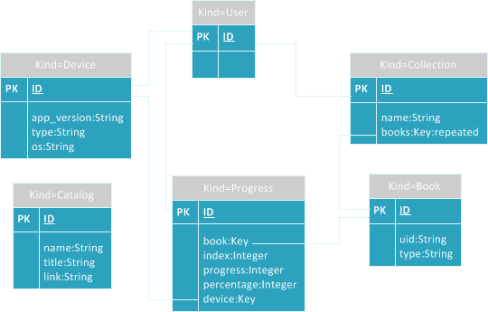
Spesifikasi - Client
smartphone / tablet ITBookReader
Membaca Buku Digital - PDF / EPub
Komunikasi client - server: JSON
Pencari file Buku Digital
Menyimpan informasi pada database - SQLite
Representasi Perpustakaan Digital & Koleksi Buku Digital
Spesifikasi - Komponen Client
Pembaca Buku Digital
Daftar koleksi Buku Digital Pengguna
Daftar Perpustakaan Digital
Spesifikasi - Fitur Opsional Client
Authentication and Authorization:
Informasi Buku Digital
Informasi Koleksi
Informasi aktivitas dan progres membaca buku
Spesifikasi - Diagram Alur Client
Memulai Aplikasi:
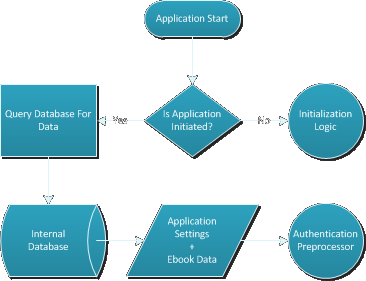
Spesifikasi - Diagram Alur Client
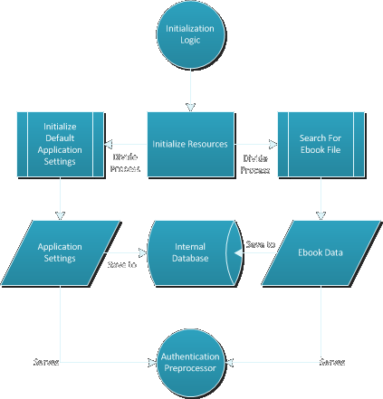
Spesifikasi - Diagram Alur Client
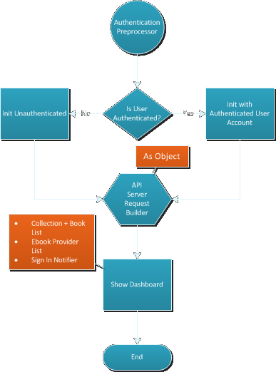
Implementasi dan Evaluasi
Implementasi
API Server
Google App Engine
GAE Python SDK - Python 2.7
Google Cloud Endpoints
Client
ITBookReader
Sistem Operasi Android
Implementasi - API Server
Pendaftaran GAE Instance
Nama Instance: 'itbook-app'
Pendaftaran API Client ID
Google APIs Console
Identifikasi Client
Implementasi - API Server
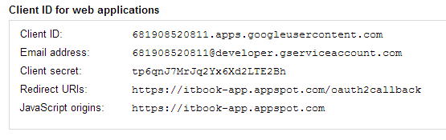
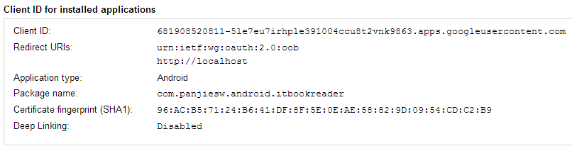
Implementasi - API Server
Kode Representasi Database (Model Class)
from google.appengine.ext import ndb
class NamaModel(ndb.Model):
property1 = ndb.StringProperty('p1')
property2 = ndb.DateTimeProperty('p2', auto_now=True)
Implementasi - API Server
Memasukkan data Perpustakaan Digital
from application.models.catalog import Catalog
catalog1 = Catalog()
catalog1.name = 'feedbooks'
catalog1.title = 'Feedbooks'
catalog1.url = 'http://www.feedbooks.com/site/free_books.atom'
catalog2 = Catalog()
catalog2.name = 'epubbud'
catalog2.title = 'ePub Bud | OPDS Catalog | All Books'
catalog2.url = 'http://www.epubbud.com/feeds/catalog.atom'
catalog3 = Catalog()
catalog3.name = 'manybooks'
catalog3.title = 'ManyBooks.net'
catalog3.url = 'http://manybooks.net/opds'
catalog4 = Catalog()
catalog4.name = 'internetarchive'
catalog4.title = 'Internet Archive Catalog'
catalog4.url = 'http://bookserver.archive.org/catalog'
catalog5 = Catalog()
catalog5.name = 'pragpub'
catalog5.title = 'PragPub Magazine | The Pragmatic Bookshelf'
catalog5.url = 'http://pragprog.com/magazines.opds'
catalog1.put()
catalog2.put()
catalog3.put()
catalog4.put()
catalog5.put()
print(catalog1)
print(catalog2)
print(catalog3)
print(catalog4)
print(catalog5)
Implementasi - API Server
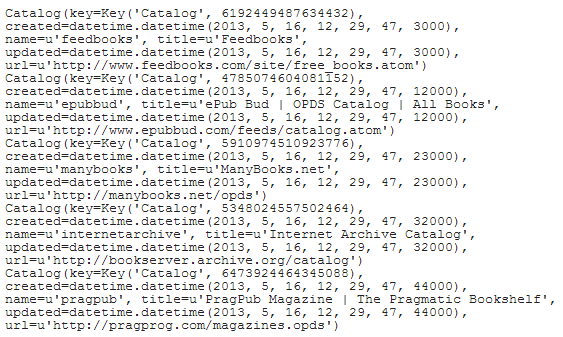
Implementasi - API Server
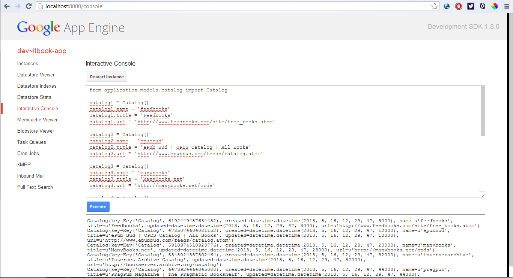
Implementasi - API Server
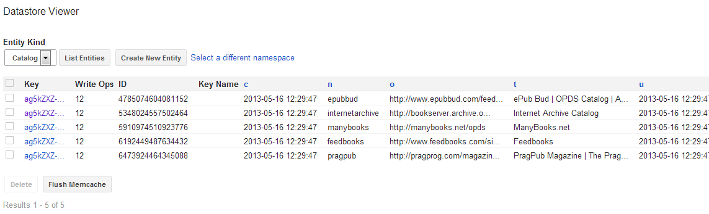